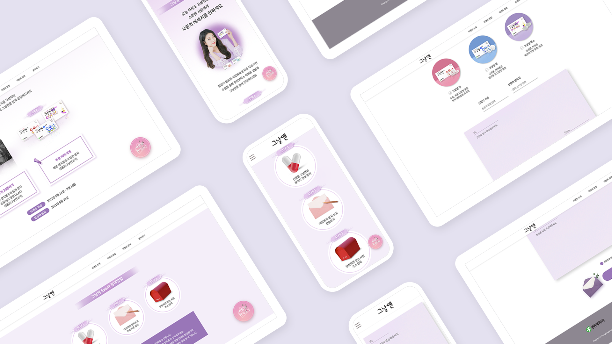

진통제 시장에서 비교적 인지도가 낮은 그날엔의 이름으로 인한 여성전용 약이라는 잘못된 오해와 너무 유명한 광고모델로 인해 그날엔에 대한 이미지가 모호해진 점을 해결하기 위해 그날엔의 큰 장점인 광고모델을 적극 활용하여 그날엔에 대한 올바른 홍보를 하고자 기획한 감성적인 이벤트 페이지이다.
BANNER
여성 타겟이 아닌 진통제를 사용하는 남녀노소 모든 소비자를 타겟으로 삼아 각 연령과 그의 상황에 맞는 문구를 사용하여 3종류의 배너를 디자인 하였다.

CONTENTS
그날엔의 감성적인 이미지를 살려 기획한 편지를 작성하는 이벤트에 맞게 내용을 구성하고 디자인했다. 사용자가 이벤트를 순조롭게 참여할 수 잇도록 경품과 참여방법에 대한 안내를 상세히 넣었고 이벤트 폼은 정말 편지를 작성하는 느낌이 들도록 디자인을 살렸다.
DETAILS
이벤트를 참여하고 완료하기 전에 선택한 제품과 작성한 정보와 편지내용이 맞는지 마지막으로 확인할 수 있게 했다.
PROMOTION
참여율을 올리기 위해 많은 사람들에게 노출되도록 네이버 홍보용 배너와 카카오톡 공유 썸네일을 디자인 하였고 많은 사람들이 이용하는 SNS '인스타그램'에 게시할 카드뉴스를 제작하여 더욱 쉽게 이벤트에 참여할 수 있도록 하였다.